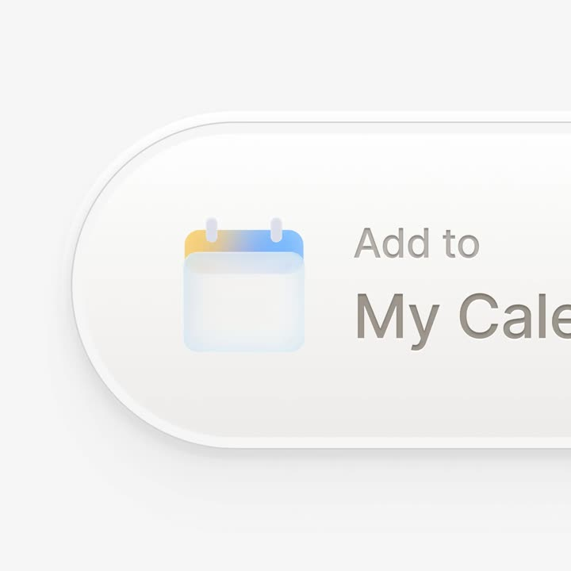
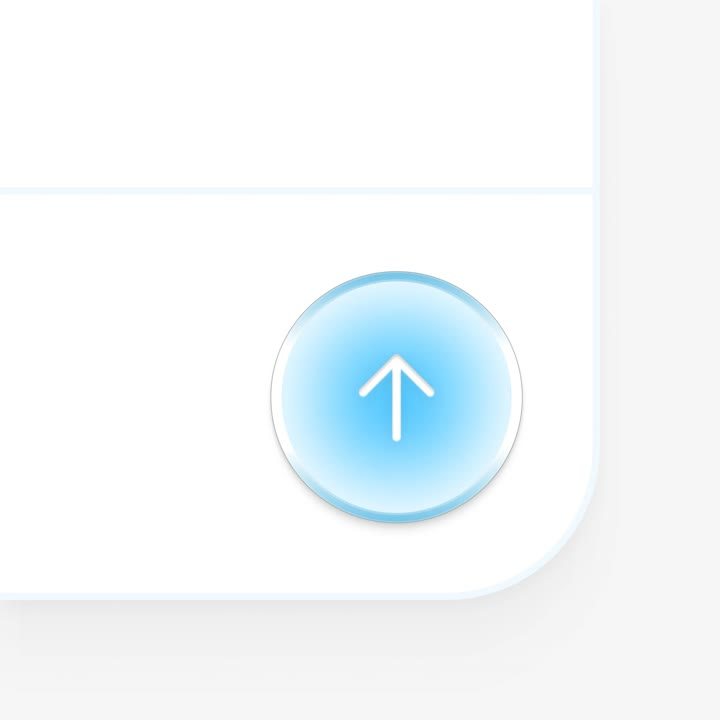
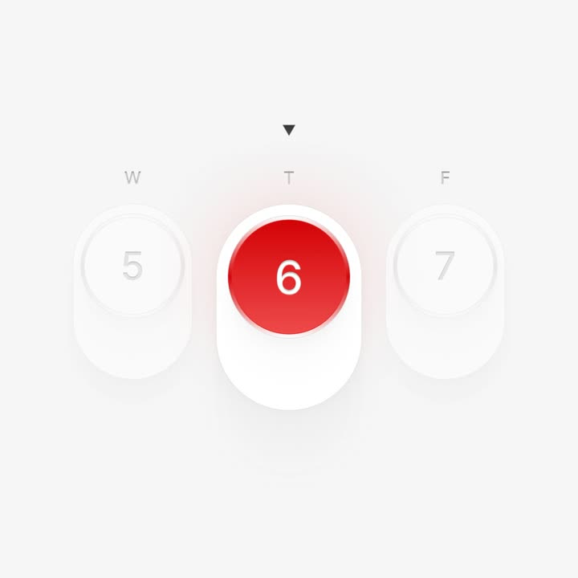
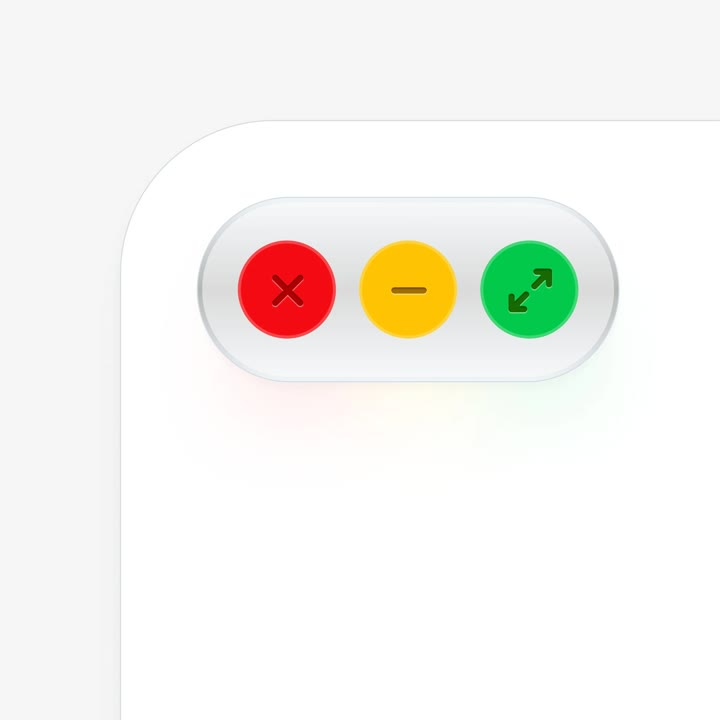

Glassmorphic calendar button set (illustration): a frosted-glass pill 'Add to My Calendar' with a glossy translucent calendar icon (orange-to-blue gradient header, glass body), and a matching circular blue-glass button with an up arrow - soft inner glows, edge highlights, and diffused shadows sell the glass material.
Media
Frame-by-frame




media 1
Close crop of the pill: white frosted body (translucent, blurred backdrop), glass calendar charm with gradient header and two binder rings, soft grey label type.
media 2
Circular button: radial blue glass (bright cyan core fading to white edge), white up-arrow glyph, thick specular rim light bottom-left, set into a frosted panel corner.
Build prompt
Rebuild these static renders 1:1, pixel-faithful: a glassmorphic calendar button set - a frosted-glass pill "Add to My Calendar" with a glossy translucent calendar charm, and a matching circular blue-glass button with an up arrow.
## Integration
Integration: stack-agnostic spec - every value is plain layout/typography/CSS; recreate with your own components and assets.
## Layout
Render 1: close crop of the frosted pill with label and charm. Render 2: circular button set into a frosted panel corner.
## Content & materials
Pill: white frosted translucent body (real backdrop blur shows through), soft grey label. Calendar charm: glass body, orange-to-blue gradient header, two binder rings. Circular button: radial blue glass (bright cyan core fading to white edge), white up-arrow glyph, thick specular rim light bottom-left. Every glass element: inner glow + one specular rim light with consistent direction + diffused cool-toned shadow.
## States
Static renders. Optional: hover softens the shadow slightly, 150ms.
## Don't miss
- Real backdrop blur on frosted parts - translucent white fill is not glass.
- The charm's gradient header and binder rings are the character details.
- All three layers (inner glow, rim light, diffused shadow) or it reads as flat plastic.